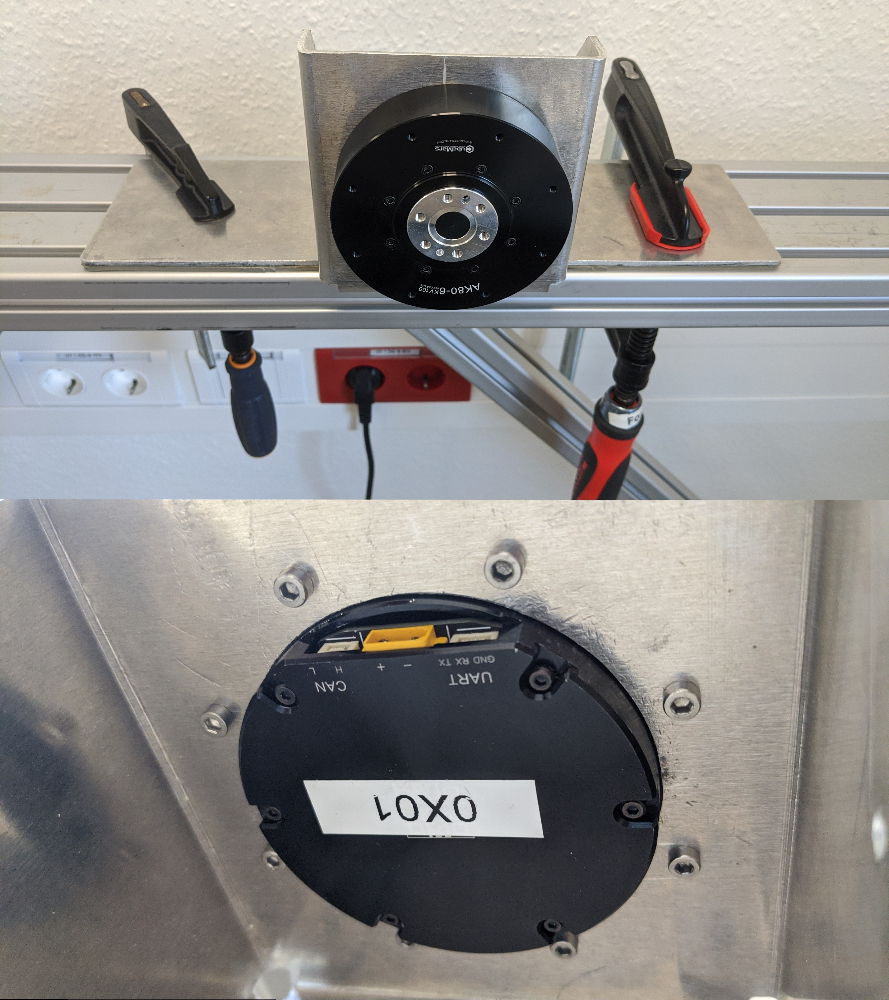
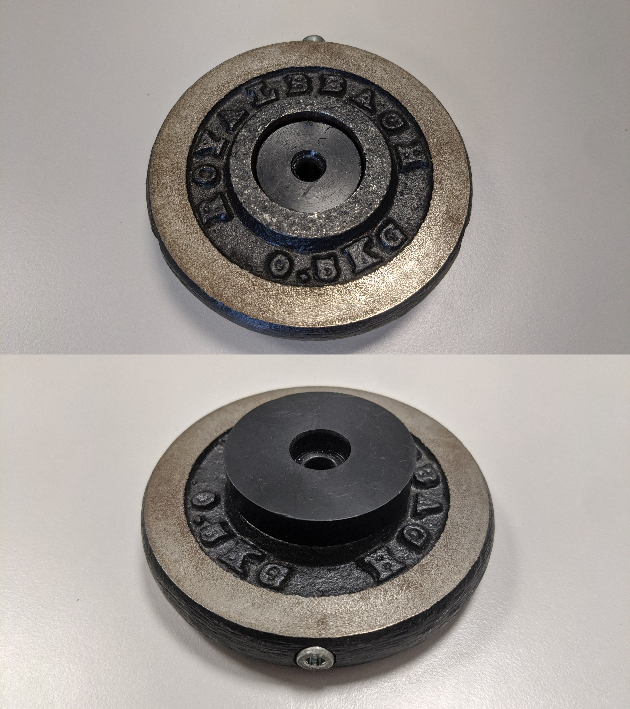
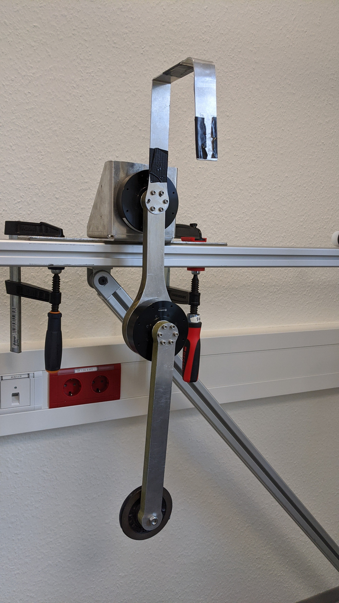

Hardware Assembly
For assembling the hardware follow these steps:
For the physical assembly of the double pendulum start by mounting the motor mount on a robust horizontal surface (e.g a table). If suffices to fix the motor mount with one or two screw clamps. Make sure that the swinging plane of the double pendulum is free. Mount the first motor to the motor mount.
Mount the second motor to the end of the first link.
Attach the first link to the mounted motor (to the motor shaft).
Attach the weight fixation to the weight.
Attach the weight to the end of the second link.
Mount the second link to the second motor shaft.
 (a) Step 1 |
|
|
 (c) Step 4 |
|
 (f) Step 6 |
 (b) Step 2
(b) Step 2 (c) Step 3
(c) Step 3 (e) Step 5
(e) Step 5Note
Since the motors do not offer a hollow shaft, the cables (power and can) to the second motor need to come from the front.
Note
If the second link is longer than the first link, the first link needs to be extended in the opposite direction with a U-shaped aluminium piece to prevent windup of cables. The U-shape is attached between the first motor and the first link.
Note
If the width of the weight does not allow an inward facing position (as in figure (f)) because it would collide with the first link, the weight can also be mounted facing outside.